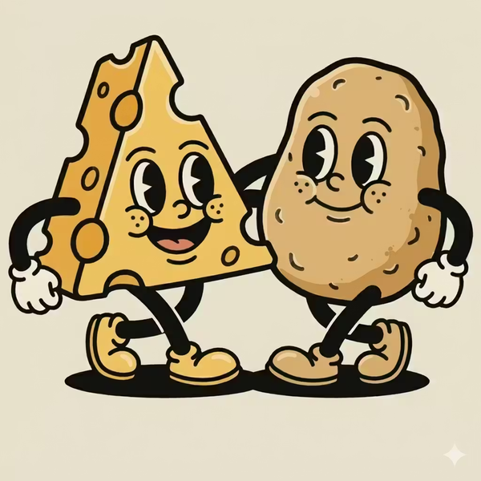

Anyone can learn Korean
in the right order.
From Hangul to TOPIK level 6, the lessons are already in order.
Start from the very first step, or take a 3-minute test and jump in where you are.
무료 · 가입 없이 바로 · 3분쯤
길을 하나 고르고 쭉 따라가세요
치즈감자로 할 수 있는 것
오늘의 문제를 불러오는 중…
In the last 4 weeks 256 people studied here · 4 min 23 s each on average Google Analytics · Sep 7 – Oct 4, 2026
- 모든 문항 창작 · 기출 아님
- 뜻풀이 국립국어원 한국어기초사전
- 코스 · 문법 · 사전은 무료
더 보기 — 다른 공부 방법
한국어로 들어가는
여섯 갈래
Cheesepotato is a free website for learning Korean, from the Hangul letters through TOPIK level 6. It holds 97 courses across 401 lessons, 290 grammar points with meanings, examples and dialogues, 1,370 TOPIK-style practice questions covering listening, reading and writing for TOPIK I and II, 54 reading passages, and a 7,970-word dictionary using definitions from Korea's National Institute of Korean Language. Everything runs in the browser with no install and no sign-up.
| 듣기 | 읽기 | 쓰기 | 급수 | |
|---|---|---|---|---|
| TOPIK I | 86 | 400 | 시험에 없음 | 1~2급 |
| TOPIK II | 79 | 605 | 200 | 3~6급 |
연습 문항은 기출이 아니라 직접 만든 것입니다. TOPIK 형식을 따랐고 국립국제교육원과 관계가 없습니다.
왜 창작 문항일까요? 공식 기출문제는 마음대로 옮길 수 없어요 — 실제 시험지는 TOPIK 공식 누리집(topik.go.kr)에서 보세요. 치즈감자는 같은 유형을 번호별로 연습하고, 풀자마자 해설로 실력을 쌓는 곳이에요.
자주 묻는 것
치즈감자는 어떤 사이트인가요?
치즈감자는 한국어를 무료로 배우는 학습 사이트입니다. 한글 낱자부터 TOPIK 6급까지 다루고, 코스 97개·레슨 401개, 문법 표현 290개, TOPIK 연습 문항 1,370개, 읽기 지문 54편, 낱말 7,970개를 담고 있습니다. 브라우저에서 바로 돌아가고 설치할 것이 없습니다.
정말 무료인가요? 회원가입을 해야 하나요?
네. 코스 · 문법 표현 · 사전 · 레벨테스트 · 읽기는 무료이고 회원가입 없이 바로 열립니다. TOPIK 연습 문제는 로그인 없이 하루 10문항, 무료 로그인하면 더 풀 수 있어요. 가입도 무료이고 카드 정보를 묻지 않아요 — 진도를 여러 기기에서 이어 볼 때 씁니다. TOPIK 모의고사는 1회차가 무료(로그인하면)이고, 전 회차는 유료 구독 「치즈감자 Pro」로 열려요.
한국어를 처음 배우는데 어디서 시작하나요?
「코스로 배우기」의 초급부터 시작하세요. 첫 코스가 한글 낱자를 하나씩 가르칩니다 — 글자를 누르면 소리가 나요. 시작하기 전에 한국어를 알고 있을 필요가 없습니다.
TOPIK I 과 TOPIK II 는 무엇이 다른가요?
TOPIK I 은 1~2급을 재고 듣기 30문항·읽기 40문항 두 영역입니다. TOPIK II 는 3~6급을 재고 듣기 50·읽기 50·쓰기 4문항 세 영역이에요. TOPIK I 에는 쓰기가 없습니다. 치즈감자도 똑같이 나눠서, TOPIK I 을 고르면 듣기와 읽기만 보입니다.
TOPIK 듣기는 어떻게 연습하나요?
소리를 듣고 보기 넷 중에서 고릅니다. 대본은 답을 고른 뒤에야 펼쳐집니다 — 고르는 동안 글을 같이 볼 수 있으면 그건 듣기가 아니라 읽기 시험이 되니까요. 답을 고르면 누가 말했는지 표시된 대본이 열려서 무엇을 놓쳤는지 정확히 보입니다.
여기 있는 문항은 기출문제인가요?
아닙니다. 치즈감자의 문항은 전부 TOPIK 의 형식과 난이도를 따라 새로 만든 것입니다. 기출문제가 아니고, TOPIK 을 주관하는 국립국제교육원과 관계가 없습니다.
낱말 뜻풀이는 어디서 왔나요?
국립국어원 한국어기초사전에서 가져왔고 CC BY-SA 2.0 KR 로 씁니다. 낱말 7,970개가 그렇습니다. 문법 항목 197개는 이 사이트에서 직접 쓴 것이에요.
휴대폰에서도 되나요?
됩니다. 대부분이 휴대폰으로 공부하기 때문에 처음부터 그쪽을 기준으로 만들었어요. 단어장 쪽은 안드로이드 앱도 있고 iOS 는 준비 중입니다.
오늘 아침에
한국어를 읽기 시작하세요
한글은 하루면 익히도록 설계된 글자입니다. 짧은 레슨, 한 번에 하나씩, 그리고 스스로 확인하면서.
읽어보세요.
발음으로 레벨을 잽니다.
문장을 소리 내어 읽으면 얼마나 정확히 전달되는지
글자 단위로 비교해 레벨을 알려드려요.
지문 하나를
소리 내어 읽으면 끝
난이도를 고르면 그 단계 지문을 무작위로 하나 뽑아드려요.
가입도, 설치도 필요 없어요.
마이크 권한이 필요하고, 인식은 브라우저가 처리합니다. 녹음된 소리는 저장하지 않습니다.
이 글을 소리 내어 읽어주세요
마이크를 누르고 읽기 시작하세요
크롬이나 엣지에서 열면 바로 쓸 수 있습니다. 아이폰은 사파리 최신 버전에서 동작해요.
내 학습 현황을
한눈에
앱에서 보던 숫자를 브라우저에서도 봅니다.
외운 단어로
놀아 보세요
내 단어장이 그대로 게임이 됩니다. 로그인하면 저장해 둔 단어가 그대로 나와요.
인쇄해서 푸는
모의고사와 자료
치즈감자가 TOPIK 형식으로 직접 만든 모의고사를 무료로 인쇄해 가세요. 앱에 넣는 단어 자료도 있어요.
치즈감자 모의고사 · TOPIK 형식 · 무료 인쇄
표지 · 문제지 · 답안지 · 정답까지 한 번에. 인쇄 창에서 「PDF로 저장」을 고르면 파일이 돼요. 문항은 모두 치즈감자 창작 — 기출이 아니고 국립국제교육원과 관계없어요.학습지 · 무료 인쇄
사이트 자료로 엮은 인쇄용 학습지예요. 인쇄 창에서 「PDF로 저장」을 고르면 파일로 남길 수 있어요.공항 · 교통 · 숙소 · 식당 · 쇼핑 · 관광 · 약국과 긴급 상황 — 필수 낱말 · 꼭 쓰는 문장 · 빈칸 채우기 · 짝 맞추기 · 말하기 체크리스트 · 정답.
모두의 자료
파일은 보관하지 않고 단어와 뜻만 저장합니다. 올려도 되는 자료인지 확인하고 올려주세요.
확인 후 내려야 할 자료는 삭제합니다. 누가 신고했는지는 올린 사람에게 보이지 않습니다.
국어사전
국립국어원 한국어기초사전에서 가져왔고 CC BY-SA 2.0 KR 로 씁니다.
계정
앱과 웹이 같은 계정을 씁니다.
프로필이름 · 사진고치기
내 단어장
앱에서 저장한 단어를 브라우저에서 그대로 봅니다.
앱에서 첫 단어를 구워 보세요.
연결을 확인하고 다시 시도해 주세요.